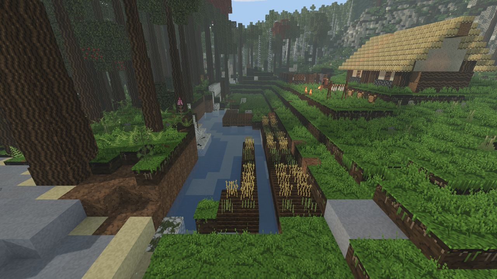
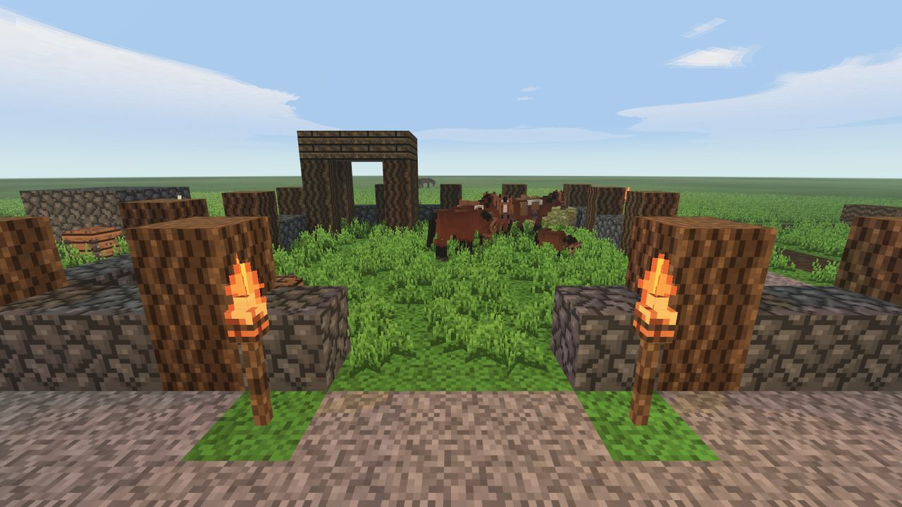
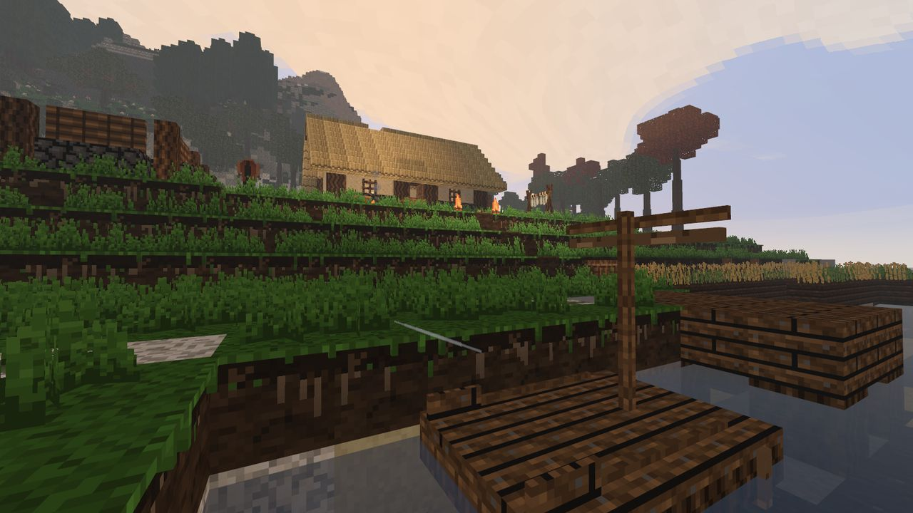

PRIMITIVE
Воксельная игра на выживание на Rust: клиент на wgpu + авторитативный сервер на tokio. Одиночная игра и сетевая — на одном и том же сервере.
Текущая версия 1.5.2 · Windows, Linux, Android · открытый исходный код
Скачать Релизы на GitHub Как играть

Что это
Вы просыпаетесь ни с чем и голыми руками разбиваете камень. Дальше — кремень, огонь, глина, медь, бронза, железо: семь веков, и каждый упирается в предыдущий. Каждый шаг — повод куда-то пойти: с луга уходят, потому что руда в холмах, а возвращаются, потому что дома поле и огонь.
Правило, которое решает споры о механиках: механика должна ставить перед игроком решение, а не поручение. Шерсть — самая тёплая одежда и бесполезна под дождём, поэтому переход на север — это план, а не число в характеристиках.
Отдельного «офлайн-режима» нет: одиночная игра поднимает настоящий сервер внутри процесса клиента и подключается к нему. Мир, физика и симуляция — в одном экземпляре, поэтому одиночная игра не может разойтись с сетевой.
Игра — один исполняемый файл: текстуры, модели и звуки встроены в него.
Папка assets рядом с ним не обязательна, но если она есть, файл с диска
побеждает встроенный — так делаются свои текстуры и звуки.
Около 80 % игры сделано с использованием нейросетей. Код — Claude (Anthropic): от генератора мира и сетевого протокола до звукового движка и интерфейса. Это не скрытая деталь, а способ, которым проект написан, и он записан в самом репозитории — в README журнал решений объясняет, почему каждая вещь устроена именно так.
Возможности
Мир
Холмы, степь, леса и болота, реки, которые доходят до моря, климат по широте. В новых мирах — скальные торы на гребнях, лощины в холмах, речные террасы, глина пластом под поймой.
Каменный век
Камень и волокно руками, отщепы из кремня, древко — и только потом нож, топор и кирка. Ни один инструмент не делается в обход заготовок. Инструменты тупятся и изнашиваются.
Тело
Голод тратит не время, а работа. Жажда, холод, мокрая одежда, раны и переломы. Жареное мясо вчетверо сытнее сырого — поэтому огонь и окупается.
Огонь и металл
Костёр гаснет под дождём. Медь плавят на любом огне, бронзу сплавляют только у горна, железо получают крицей в домнице. Нож, топор и кирка из трёх металлов.
Звери
Стада и стаи, детёныши, приручение, загон, стрижка, молоко, лошадь с седлом. С 1.5.2 — лиса, лось, бобр, утки и лягушки, у каждого свой вопрос к игроку.
Погода и год
Ясно, дождь, гроза с молниями, лесные пожары, времена года. Рыба клюёт по воде, часу и погоде: лучше всего — в последние минуты перед дождём.
Сеть
Авторитативный сервер, античит, интерес по сетке вместо перебора. Сервер помнит игроков по UUID: рюкзак, здоровье и место выхода переживают перезапуск.
Моды и плагины
Скриптовые плагины на Rhai для сервера и нативные моды через C ABI
(primitive_modapi); полёт /fly живёт в моде, а не в движке.
В следующей версии — Rust-моды.
Звук и музыка
Каждый звук — запись под лицензией CC0: шаги по траве, гравию, снегу и доскам, удары по камню и дереву, треск костра, голоса зверей. Записи встроены в игру в Vorbis и разжимаются один раз при старте.
Музыки как саундтрека нет: её сочиняет генератор, пока она играет. Десять настроений — меню, день, ночь, пещера, дождь, гроза, море, лес, очаг, опасность, — у каждого свой лад. Такта нет: долгие тянущиеся тона и редкий голос поверх. Тишина — часть замысла: пьеса идёт двадцать–тридцать тактов и умолкает до полутора минут.
Свои звуки подставляются без пересборки — выгрузите банк в .wav,
поправьте и положите в assets/sounds/. Подробности — в гайде.
Скриншоты






Быстрый старт
Скачайте архив релиза, распакуйте, запустите primitive_client.exe. Больше ничего не нужно.
Как играть — в вики.
Или из исходников — нужен Rust (стабильный):
cargo run --release -p primitive_clientОбязательно --release. В отладочной сборке построение мира
в десять–двадцать раз медленнее, и играть в неё нельзя.
Ссылки
| Куда | Что там |
|---|---|
| Вики | руководство игрока на четырёх языках, сверенное с кодом |
| Репозиторий | исходный код, история, issues |
| Релизы | сборки под Windows и Linux |
| GUIDE.md | полная инструкция игрока |
| README.md | журнал решений: почему всё устроено именно так |
| CHANGELOG.md | что менялось от версии к версии |
| Issues | баги и предложения |